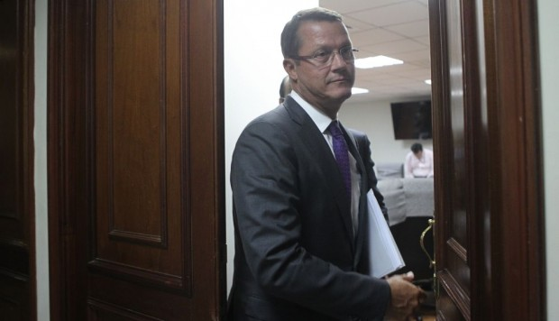
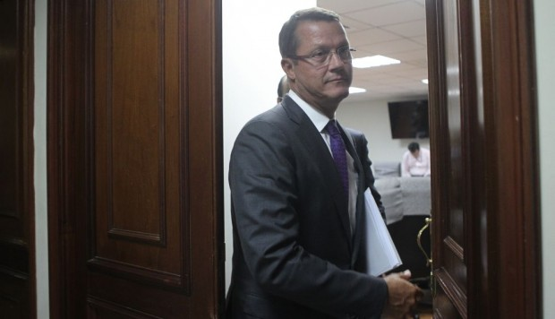

El interrogatorio de Juárez al ex jefe de Odebrecht en el Perú está programado para las 11 de la mañana (hora peruana). El fiscal investiga al ex presidente Ollanta Humala y a su esposa Nadine Heredia por el presunto delito de lavado de activos. Desde el 13 de julio del año pasado, la pareja cumple prisión preventiva por esa indagación.